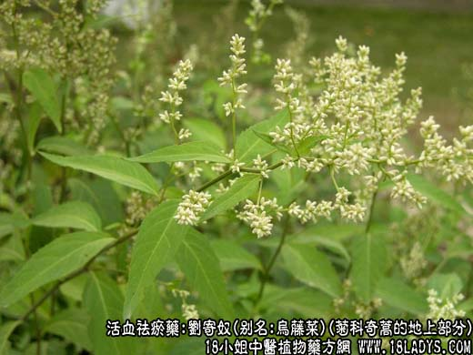
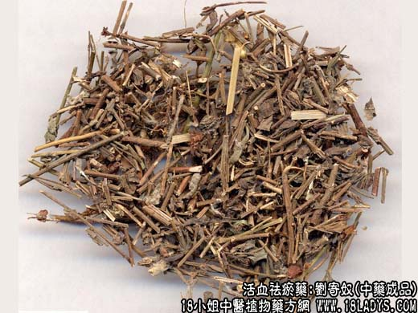

【中药概述】
刘寄奴，别名：金寄奴、乌藤菜、六月雪、九里光、白花尾、炭包包、千粒米、斑枣子、细白花草、九牛草、苦连婆，别名：为菊科草本植物奇蒿的地上部分。苦，温。归心、脾经。
1．祛瘀通经：用于血瘀经闭，常与当归，红花，元胡等配伍；跌仆伤痛，可与骨碎补，延胡索等同用。如（千金方<治折伤方>）主治折伤瘀血作用。
2．消化食积：用于食积停滞，脘腹胀痛，可与消食药同用。
【药物形态】
本品为为菊科草本植物奇蒿的地上部分，多年生直立草本，高60～100厘米。茎有明显纵肋，被细毛。叶互生；长椭圆形或披针形，长6～9厘米，宽2～4厘米，先端渐尖，基部狭窄成短柄，边缘具锐尖锯齿，上面绿色，下面灰绿色，有蛛丝毛，中脉显著；上部叶小，披针形，长约1.5厘米；下部叶花后凋落。头状花序，钟状，长约3毫米，密集成穗状圆锥花丛；总苞片4轮，淡黄色，无毛，覆瓦状排列；外层花雌性，管状，雌蕊1；中央花两性，管状，先端5裂，雄蕊5，聚药，花药先端有三角状附属物，基部有尾，雌蕊1，柱头2裂，呈画笔状。瘦果矩圆形。花期7～9月。果期8～10月。野生于山坡、树林下，分布江苏、浙江、江西、湖南、湖北、云南、四川、贵州、福建、广西、广东等地。
【药效鉴别】刘寄奴善通行走散，破血祛瘀力强，多用于外伤及妇科。
【药理作用】具有解痉，抗菌，促血凝，加速血液循环等作用。
【化学成分】含挥发油、蛋白质、胡萝卜素及核黄素等。
【用量用法】6——15g，水煎服，或入丸、散剂。
除非注明，文章解释权均归中药大全所有，欢迎转载！转载请注明本文地址，谢谢。本文地址： https://www.daquan.com/post/2007.html